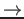
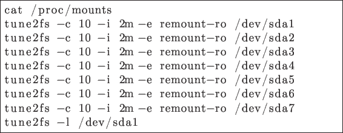

I'm choosing Install Fedora. During verification of installation media I'm pressing Esc, to skip this proces.
I'm choosing default language and going to partitioning section by clicking on disk icon. As Partition type I'm choosing Standard Partition and selecting Let me customize the partitioning of the disks instead.
I'm adding new partition--root--by typing / as Mount Point and 2GB as Desired capacity.
In customize section I'm choosing:
- Device Type
- Standard Partition
- File System
- ext4
And applying changes. In analogous way I'm adding following partitions:
- /boot
- 500 MB
- /home
- 500 MB
- /tmp
- 500 MB
- /usr
- 4 GB
- /var
- 2 GB
And finally I'm adding swap partition for remaining space by typing swap in Mount Point and leaving Desired capacity field empty.
I'm clicking Finish Partitioning and then Software selection. As environment I'm choosing Minimal Install, clicking Done and Begin Installation.
I'm setting root password and finishing configuration and clicking reboot. After reboot of VM I'm unchecking Fedora installation iso file (Devices  CD/DVD) and rebooting it again.
When system boot I'm logging in as root and typing following commands:

cat /proc/mounts shows current mount options. tune2fs is used to adjust tunable filesystem parameters on filesystems. I used following arguments:
- -c 10
- Adjust the maximal mounts count between two filesystem checks to 10.
- -i 2m
- Adjust the maximal time between two filesystem checks to 2 months.
- -e remount-ro
- Change the behavior of the kernel code when errors are detected. Remount filesystem read-only.
- /dev/sdaN
- Device name.
- -l
- List the contents of the filesystem superblock (To check).
Krzysiek
2013-05-14